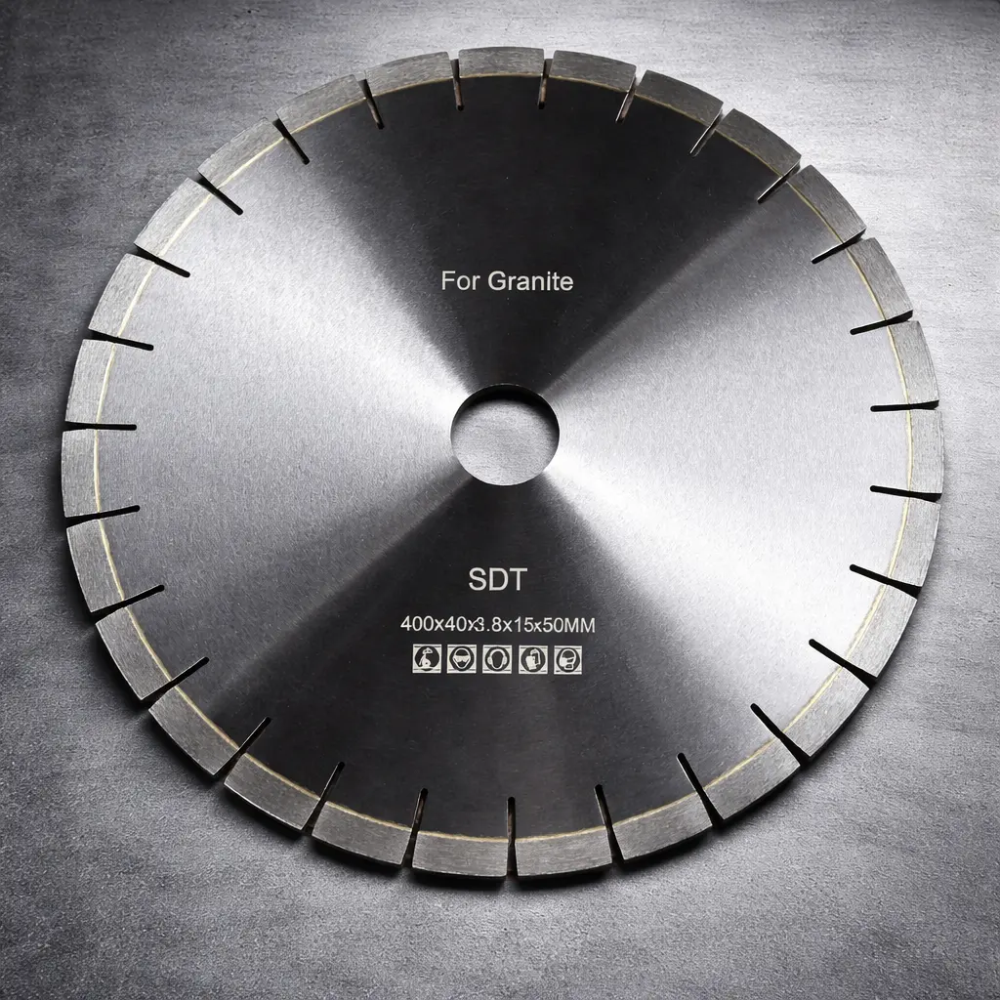
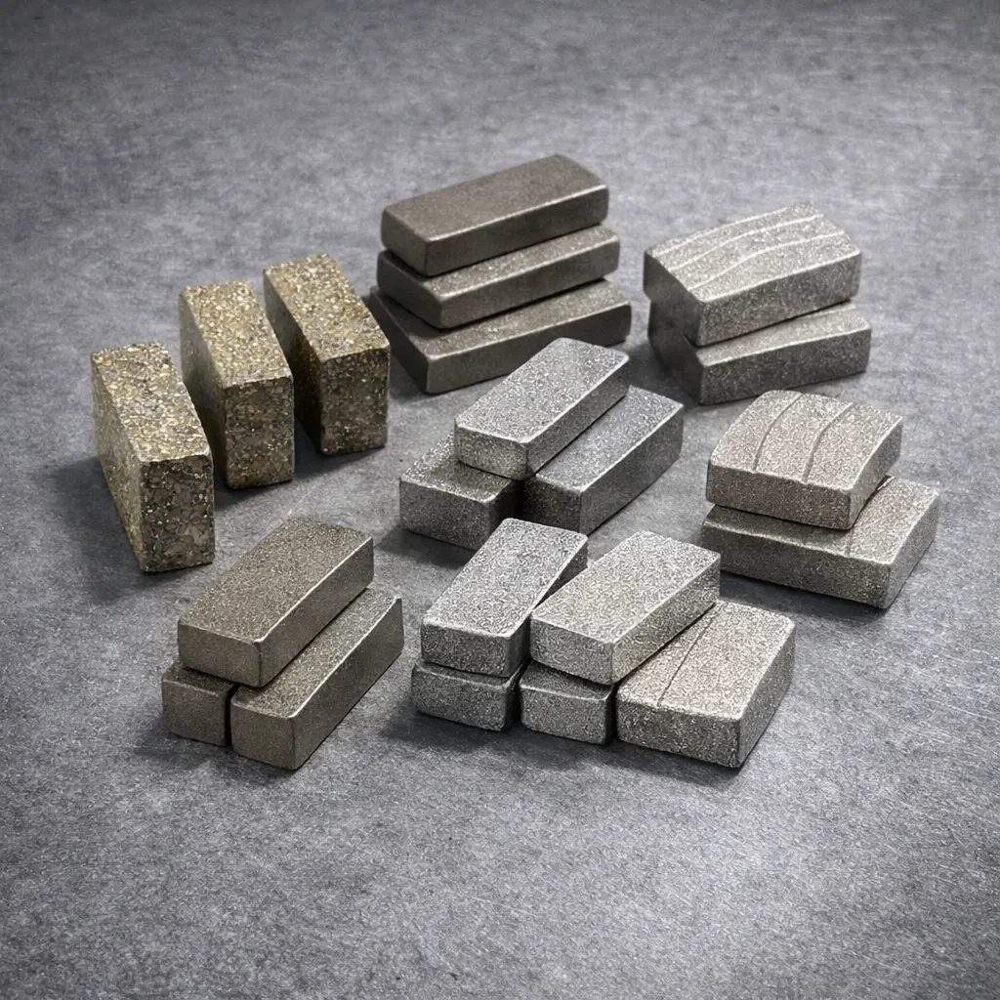
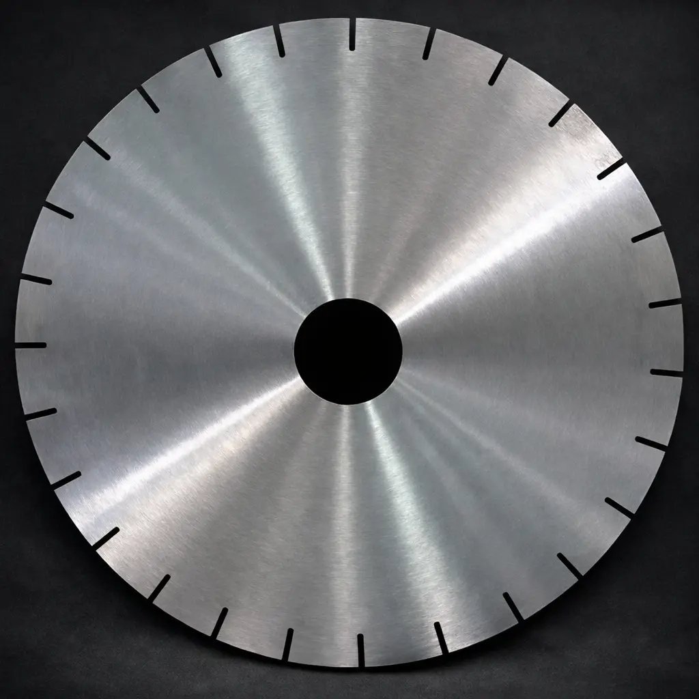
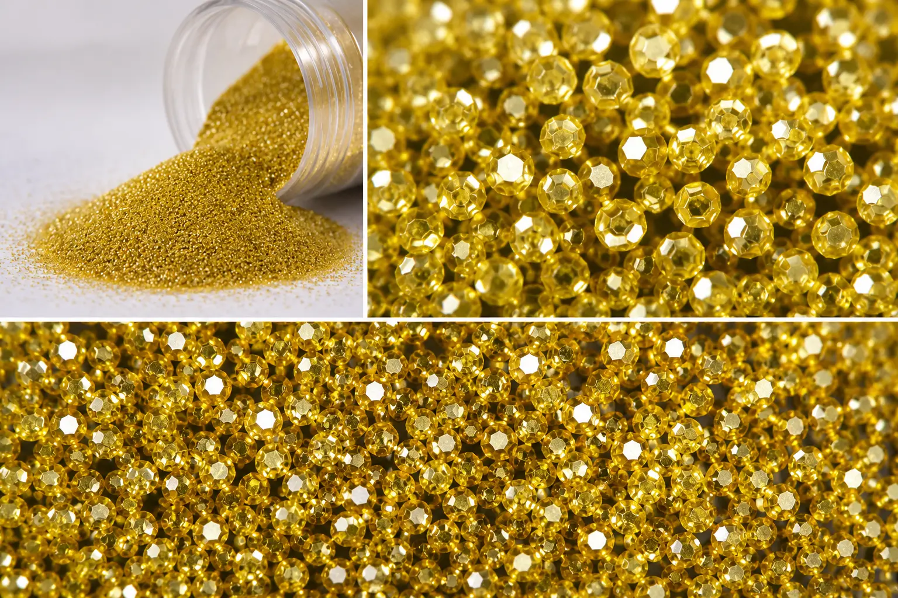

Shubham Diamond Tools
Diamond Tools Manufacturer & Supplier From Jaipur
Shubham Diamond Tools is a Jaipur-based supplier of premium diamond tools and industrial raw materials. For more than 30 years, we have supplied circular saw blades, diamond segments, graphite blocks, steel saw blanks and synthetic industrial diamond powder to manufacturers across India.
Built for precision. Engineered for durability. Trusted nationwide.

High-performance diamond circular saw blades designed for granite and natural stone cutting applications.
View Product
Precision-engineered segments offering cutting speed, wear resistance and durability.
View ProductHigh-density graphite blocks for mould manufacturing and industrial applications.
View Product
Heat-treated circular steel saw blanks engineered for dimensional accuracy and stability.
View Product
Industrial-grade synthetic diamond powder used in tooling, polishing and manufacturing applications.
View ProductBased in Jaipur, Rajasthan, Shubham Diamond Tools has served the Indian stone processing industry for more than three decades. We supply manufacturers, fabricators and processors across India with reliable diamond tools and industrial raw materials.
Our commitment to quality, consistency and long-term relationships has helped us become a trusted name in the stone cutting industry.
Shubham Diamond Tools is based in Jaipur, Rajasthan and supplies diamond tools, diamond segments, circular saw blades, graphite blocks, steel saw blanks and synthetic industrial diamond powder to manufacturers across India. For more than 30 years, customers have relied on our products for granite cutting, marble cutting, sandstone processing, quartz applications and engineered stone manufacturing.
Shubham Diamond Tools
6-7, Sukhija Vihar-C,
Ganpatpura 1,
Manyawas, Mansarovar,
Jaipur, Rajasthan 302020
Phone: +91 9521840262
Email: business@sdt.co.in